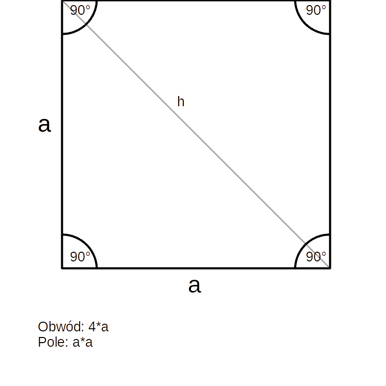
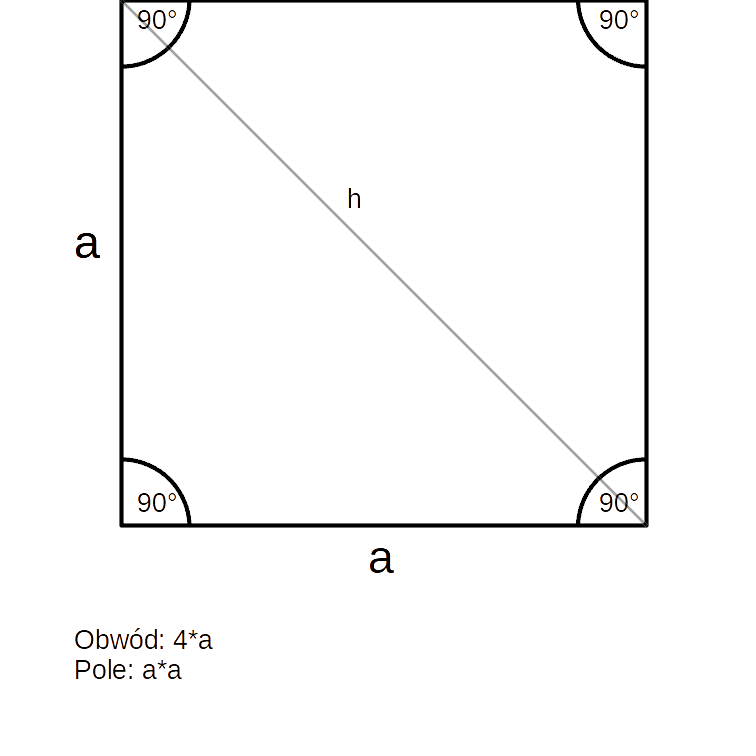
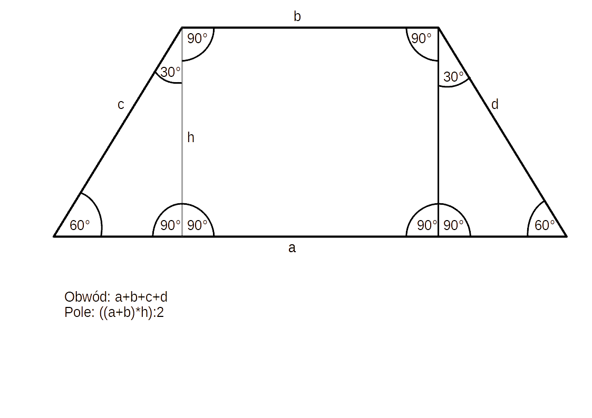
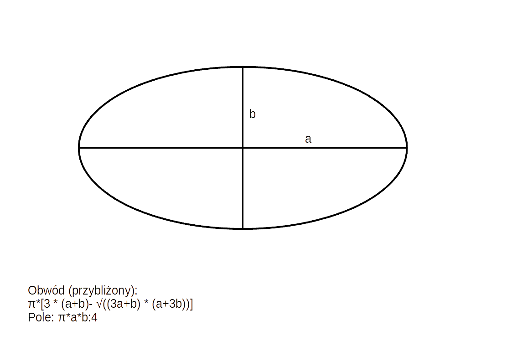

Kwadrat 🟦
Cztero kątna figura której boki mają tą samą długość, a kąty mają 90°
Jak obliczyć pole: Pole = bok × bok
Jak obliczyć obwód: Obwód = 4 × bok
Cztero kątna figura której boki mają tą samą długość, a kąty mają 90°
Jak obliczyć pole: Pole = bok × bok
Jak obliczyć obwód: Obwód = 4 × bok
Ma trzy boki

Jak obliczyć pole: Pole = 0.5 × podstawa × wysokość
Jak obliczyć obwód: Obwód = suma długości boków
Czworokąt którego wszystkie kąty proste (90°)

Jak obliczyć pole: Pole = szerokość × wysokość
Jak obliczyć obwód: Obwód = 2 × (szerokość + wysokość)
Czworokąt mający wszystkie boki równej długości

Jak obliczyć pole: Pole = (przekątna1 × przekątna2) ÷ 2
Jak obliczyć obwód: Obwód = 4 × bok
Twierdzenie: Przekątne rombu przecinają się pod kątem prostym i dzielą go na cztery przystające trójkąty.
Powiązane: Zobacz trapez, który jest blisko spokrewniony z rombem.
Czworokąt mający 2 pary boków równoległych

Jak obliczyć pole: Pole = podstawa × wysokość
Jak obliczyć obwód: Obwód = 2 × (podstawa + bok)
Czworokąt mający co najmniej jedną pare boków równoległych
Jak obliczyć pole: Pole = ((podstawa1 + podstawa2) × wysokość) ÷ 2
Jak obliczyć obwód: Obwód = suma długości boków
Twierdzenie: W trapezie wpisanym w okrąg suma długości przeciwległych boków jest równa.
Powiązane: Trapez równoramienny z równymi podstawami to równoległobok.
Zbiór wszystkich punktów na płaszczyźnie, których odległość od punktu O zwanego środkiem okręgu, jest równa promieniowi okręgu (r)

Jak obliczyć pole: Pole = π × promień²
Jak obliczyć obwód: Obwód = 2 × π × promień
Twierdzenie: Każdy trójkąt prostokątny jest wpisany w okrąg, którego średnicą jest przeciwprostokątna.
Powiązane: Dowiedz się więcej o trapezie, którego przekątna może być średnicą koła.
Figura posiadająca dwie osie symetrii, wykreślona przez odpowiednie połączenie czterech wycinków łuków o dwóch promieniach
Jak obliczyć pole: Pole = π × długa oś × krótka oś ÷ 4
Jak obliczyć obwód: Przybliżony Obwód = π × [3 × (a + b) − √((3a + b) × (a + 3b))]
Wielokąt mający sześć boków i sześć kątów

Jak obliczyć pole: Pole = (3 × √3 × bok²) ÷ 2
Jak obliczyć obwód: Obwód = 6 × bok